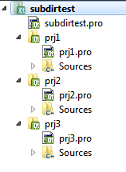

Внимание! Эта статья от 2013 года. В настоящий момент в Qt работают "подключаемые" подпроекты *.pri. Однако по ним, кроме сухой документации, информации мало.
Сборка группы проектов в qmake с помощью SUBDIRS
Представьте себе программу, имеющую плагинную архитектуру. Qt Creator тому хороший пример. Исходники таких программ должны состоять из нескольких отдельно компилируемых проектов: собственно программы и динамических библиотек плагинов. Прибавьте к этому тест-кейсы, и вполне можем получить пару десятков взаимосвязанных проектов.
Конечно, можно компилировать их по отдельности, но это неправильно. И дело здесь не только в том, что нужно нажать 5-10-20 раз на кнопку «build» вместо одного. Проекты может быть нужно строить в определенном порядке, да и банально можно пропустить какой проект. Ошибки в билде никому не нужны.
Поэтому, например, в Visual Studio для автоматизации построения группы проектов ввели понятие solution (решение), которое может содержать в себе проекты. Аналогом этого механизма в qmake является переменная SUBDIRS.
Базовый функционал SUBDIRS
Все проекты, составляющие программу, должны быть в своих подкаталогах каталога программы. В этом каталоге нужно создать .pro файл специального вида:
# проект типа subdirs
TEMPLATE = subdirs
# список каталогов проектов
# в каждом каталоге должен существовать
# одноименный .pro файл: prj1/prj1.pro, prj2/prg2.pro и т.п.
SUBDIRS = prj1 prj2 prj3
# Кроме этих двух переменных толком больше писать смысла нет.
# Разве что QMAKE_EXTRA_TARGETS, о чем ниже.

Вид subdirs проекта в Qt Creator
qmake при обработке этого файла обработает — независимо друг от друга, но с одними и теми же настройками qmake — дочерние проекты в подкаталогах, после чего в каталоге программы создаст Makefile, который будет вызывать make для дочерних проектов. К примеру, make all в корневом каталоге вызовет make all во всех дочерних каталогах.
Qt Creator отлично поддерживает проекты типа subdirs. В интерфейсе Projects все наглядно отображается, можно добавлять новые проекты в контекстном меню subdirs-проекта (New Subproject…), но самое главное — это поддержка shadow builds. Весь проект типа subdirs вместе со своими дочерними проектами билдится в один shadow каталог — с повторением структуры каталогов исходников. Очень удобно.
Структура каталогов
Если дочерние проекты хочется организовать в иерархию, можно поступить двумя способами. Во-первых, можно дочерний проект сделать subdirs проектом, все будет работать. Во-вторых, можно просто указать в переменной SUBDIRS путь к подкаталогу подкаталога, например.
SUBDIRS = prj1 prj2 prj3 dir/subdir1 dir/subdir2
Но на этом история не заканчивается. Значения, перечисленные в переменной SUBDIRS, можно использовать как имена составных переменных. Если значения содержат символы, отличные от [a-zA-Z0-9_], они заменяются на -, например для dir/subdir1 имя переменной будет dir-subdir1. Странный выбор, т.к. переменные с - в имени не везде проходят мимо парсера без ошибки. Так что лучше вложенные пути не использовать напрямую, а задавать для них алиасы:
SUBDIRS += prj1
prj1.subdir = dir/prj1
# Фактически, это то же самое, что
# SUBDIRS += dir/prj1
# только вместо составной переменной dir-prj1
# теперь используется составная переменная prj1
Вместо переменной .subdir (не одновременно с ней) можно использовать переменную .file, которая позволяет явно указать путь к .pro файлу дочернего проекта, и в этом случае его имя не должно совпадать с именем каталога проекта.
SUBDIRS += prj1
prj1.file = dir/prj1/project.pro
Зависимости между проектами
Есть два способа задать порядок билда проектов (их, при желании, можно использовать одновременно). Первый — это указать настойку в переменной CONFIG, которая означает, что проекты должны компилироваться в том порядке, в котором они указаны в переменной SUBDIRS:
CONFIG += ordered
Второй способ — это явно указать зависимости между проектами.
SUBDIRS = prj1 prj2 prj3 prj4
# prj1 будет скомпилирован после prj2 и prj3
prj1.depends = prj2 prj3
В .depends имена проектов должны указываться в том же виде, в каком они указаны в переменной SUBDIRS.
Makefile и subdirs
Для проекта можно указать нестандартное имя для Makefile файла.
prj1.makefile = MyMakefile
При этом по неведомой мне причине стандартный файл с именем Makefile тоже формируется.
В корневом Makefile (который получается из .pro файла subdir-проекта) все дочерние проекты оформляются как набор отдельных целей. Префикс для этих целей имеет вид sub-имя_переменной_проекта. Например, для проекта prg1 цели будет иметь вид в духе sub-prg1-sub_Debug. Префикс для целей можно поменять:
# цели будут иметь вид customtarget-sub_Debug
prj1.target = customtarget
И последнее. В корневой Makefile можно добавлять свои цели с помощью рассмотренного ранее механизма QMAKE_EXTRA_TARGETS. Просто цель не представляет собой интересна, но в режиме recursive этот механизм может быть полезен.
customtarget.target = check
customtarget.CONFIG = recursive
customtarget.commands = @echo Check is completed.
QMAKE_EXTRA_TARGETS += customtarget
Чтобы это работало, в дочерних проектах должны быть определены цели check. После этого вызов make check в корневом каталоге выполнит make check для всех дочерних проектов. Можно в Qt Creator для этого отдельный конфиг настроить, например.
Небольшая автоматизация
Из всех рассмотренных расширенных фич наибольший интерес представляют собой зависимости между проектами. Для некоторого упрощения жизни я использую функцию, почти без изменений позаимствованную у одного хорошего человека:
# addSubdirs(subdirs,deps): добавляет subdirs (может быть маской) вместе с зависимостями
# пути могут быть как с прямыми, так и с обратными слэшами
defineReplace(addSubdirs) {
for(subdirs, 1) {
entries = $$files($$subdirs)
for(entry, entries) {
name = $$replace(entry, [/\\\\], _)
SUBDIRS += $$name
eval ($${name}.subdir = $$entry)
for(dep, 2):eval ($${name}.depends += $$replace(dep, [/\\\\], _))
export ($${name}.subdir)
export ($${name}.depends)
}
}
export(SUBDIRS)
return(1)
}
# добавляет все проекты из каталога dir, и делает их зависимыми от проекта lib
$$addSubdirs(dir/*, lib)
Примечание: В посте есть неточность, цитирую:
«qmake при обработке этого файла обработает – независимо друг от друга, но с одними и теми же настройками qmake – дочерние проекты в подкаталогах, после чего в каталоге программы создаст Makefile, который будет вызывать make для дочерних проектов.»
На самом деле qmake не бегает по подкаталогам, а тупо из списка SUBDIRS накидает цели в корневой Makefile и каждая цель содержит 1 команду – запуск qmake в конкретном подкаталоге. То есть pro-файлы в подкаталогах обработаются потом – во время запуска make из корневого каталога, а не во время работы “корневого” qmake. Иначе говоря, Makefile в каталоге программы будет вызывать qmake, а не make, для дочерних проектов.
По крайней мере проверено на Windows 7 x64, Qt 5.3.2, MS VC++ 2013.